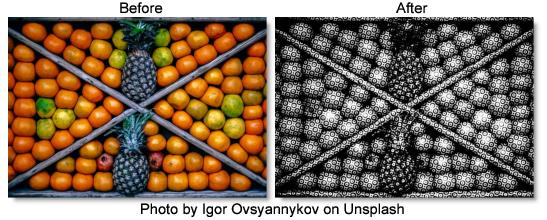

S_HalfToneRings
Description
Generates a duotone version of the image using a repeating pattern of concentric rings.
The S_HalfToneRings filter comes from the Emmy award winning Boris FX Sapphire filter set.
Category
Stylize.
Controls
Presets
To select a preset, pick one from the Presets window.
Rings Frequency
The frequency of the overall rings pattern. Increase for smaller rings, decrease for larger rings.
Rings Angle
The angle of the overall rings pattern in counterclockwise degrees.
Rings Rel Width
The relative width of the rings. Increase for wider rings, decrease for taller ones.
Rings Sharpness
Scales the sharpness of the edges of the rings.
Rings Lighten
Increase to lighten the resulting rings pattern.
Ring Number
Determines the number of concentric rings in each tile of the repeating pattern.
Ring Phase
Shifts the rings in or out within each tile of the pattern.
Rings Shift X & Y
The horizontal and vertical translation of the overall rings pattern.
Smooth Source
If positive, the image is blurred by this amount before the halftone is applied. This can be used to remove some detail in the dots and make them more consistently round.
Color1
The bright color to use for the dots pattern.
Color0
The dark color to use for the dots pattern.